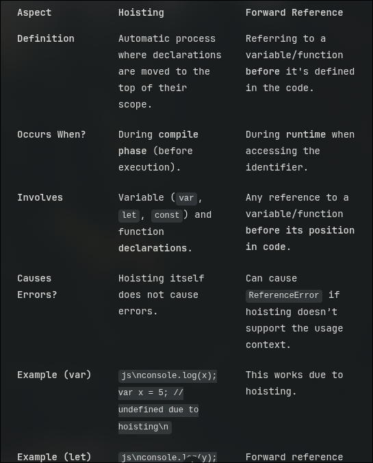
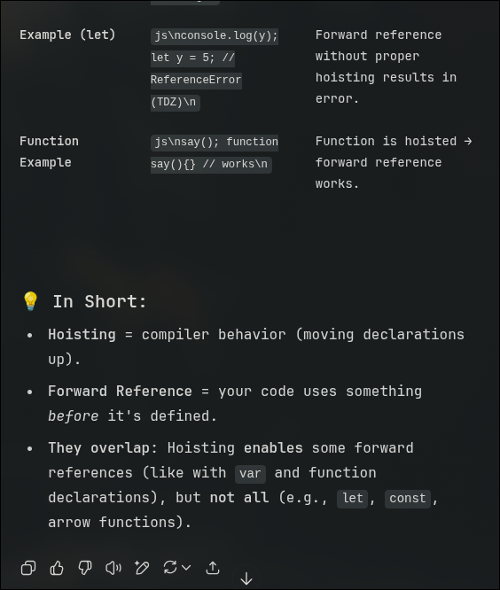

Javascript is a weakly typed , type inefficient language.
It is not necessary to terminate a statement if you are ending a line .
Features
- High-Level
- Dynamically Typed
- Automatic Memory Managment [built-in garbage collection]
- Abstraction
- Platform Independence
- Rich Standard Library
- Single-Threaded
- Try implementing a infinite loop in your browser's console
while(true){}
- Garbage-Collected
- When allocating memory in heap like
const counter={value:0}; counter.value++
JS automatically removes memory at free that is when it isn't referencing any other object.
- Interepreted [ JIT ]
- Spider Monkey is the javascript engine developed by Mozilla. It was the first-ever javascript engine created by Brendan Eich in 1995 for Netscape Navigator
Chrome uses V8. Which acutally compiles the whole down to machine code before running it.
- Protype based
- Javascript has
prototypal inheritance
- Multi-Paragidm
- Combinig style from declarative [what] functional approaches and
imperative [how] Object-oriented approaches
- Dynamic
- The data type is known at the runtime
- Non-Blocking Event Loop Concurrency model
- Its non blocking - cuz it is never waiting for any return value from any function
It is only waiting for an event to occur - only to return its call back
It has event loop - since it is always listening to event and have a function declared for the event.
For Event Loop
- Run sync code
- Run Promise or microtask callbacks
- Run async task callbacks
- Promises function are stored in the
Microtask queue which has a special high priority handler
- While normal tasks are stored in the
Task queue
Primitives
- Boolean
- Null
- Represents an empty value
0
Assigned explicitly by the developer.
- Undefined
- The default value of a variable that has no value to it
or a function that represents nothing
- Null
- Undefined
- Number
- BigInt
- Symbol
- String
These are all immutable .
Use typeof operator to check the type of a var at runtime
the typeof null and array are object
NOTE: arrays are mutables but not strings
use pop() and push() for arrays
shift() is used to remove the first element while pop is used to remove the last element.
unshift() is used to add an element in the start of the array.
delete() does exactly what pop() does but the memory is not freed.
NOTE: If it is not primitive it is an object.
Empty string and 0 are false , all others are true.
NOTE2: A single exclamation complements the value and another exclamation to it returns the original
values - [ complement of a complement is the original ]
NOTE3: == checks the value . === checks the type
Try:catch
try{
// throw new Error(); is how you explicitly throw an error
console.log("Tried / Works 😀")
}catch(error){
console.log("Failed 💀")
}finally{
console.log("I know javascript 🌍")
}
Variables
follow the following:
x='👹' // makes itself global - even if declared inside a local scoped function
var x='👹'
// var has a global scope from when declared.
It cannot have 2 different values in a single codebase.
[ special cases: when used in a function ]
// var y; initialise a variable
// y='👺'; assign a value to it
// y='👹'; reassign the value
// if var is used inside a loop then it will leak its scope and become a global variable
// if used inside a function - it will maintain local scope
let x='👹'
// has block level scope
// maintians its scope even in the loops
const x='👹'
// cannot change the variable later on in the script.
// it also follows BLOCK LEVEL scope like "let"
Functions
Like any othe programming language - here a function takes an input and gives an output
Closures are function that are nested in a function
function somefunction (input){
const output="input"+"🃏";
return function someOtherFunction(){
return output
}
}
console.log(somefunction("yourname"))
Now we can also write a shorthand as follows :
const somename= (input)=>output
Good News: javascript allows use of forward reference a.k.a Hoisting
formal: Hoisting is a javascript behavior which variables and function declarations are moved to the top of their containing scope during the compilation phase (script or function ) before execution begins.
usually in JS the variables are hoisted but *not* their VALUES Only exception for this is "VAR"


NOTE: you can use the defer keyword while referring to the / linking to the javascript in
your doc's head. So now the script is executed
Only after the entire document is loaded.
Objects
Kinda like maps or hash maps
two general ways --
const obj= new Object();
obj.name='bull';
obj.face='🐂';
orrrrrrr
const obj={
name:'bull',
face:'🐂',
age:'99',
hello:function()=>console.log("hello"+${this.name})// we use this here so that we maintain and not break any
scope.
}
// Caveat : you cannot use the keyword "this" as how you normally do to refer the local type when you are using
the "arrow function i.e '=>' "
// as '=>' bypasses the local custom user-defined scope and sticks to the scope of the window - which is the
default TARGET for "this" keyword
obj.hello()
IT ALSO SUPPORTS OOPS
- A property
- is calling a value in the object [ mostly using the dot operator ]
- A prototype
- chain is nesting of these object-calls
- Call back
- call back is a function that is passed as an argument to another function and is called inside that function later
- Aync improvisation
- use promise to act for a function where it was make sure that a value will be resolved even if it isn't resolved currently
-
Avoiding Call back Hell
- Promise can use
then and catch
- use the
await function to wait for the promise function to handle the call backs
- we also use
try catch
for error handling
- ES modules
- To share code between files
- Componenets
- A component of a framework includes
html css js to form a ui element
- Data binding
- Using place-holders
- Bundler
- bundles all the form of file to be used by the browser for ex:
vite webpack
- bonus:lint
- static analysis - for syntax , style ,bugs
JS can add inline CSS !!
using code like: document.body.style.backgroundColor="red"
var-loops-strings